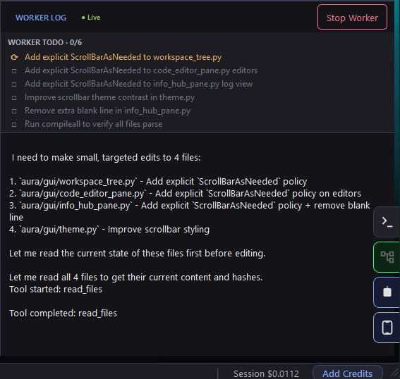
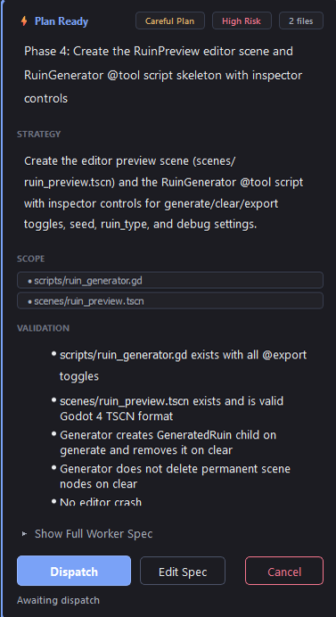
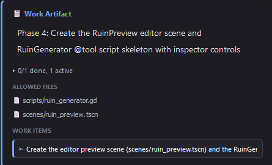
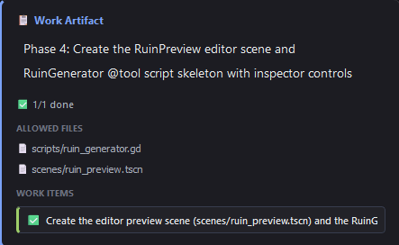
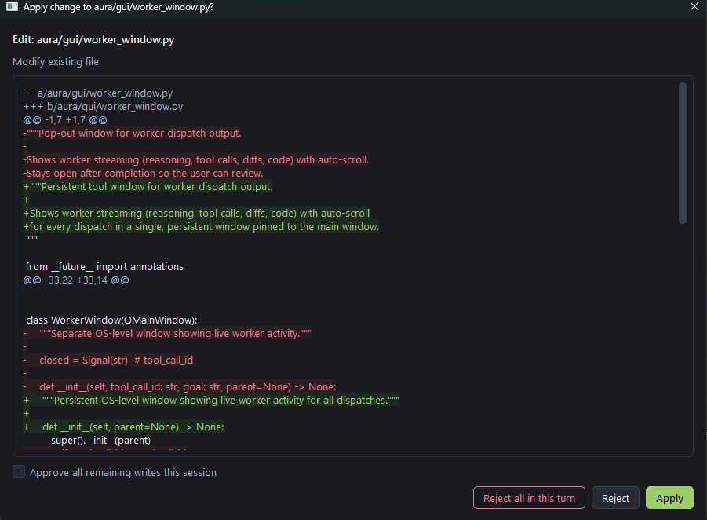
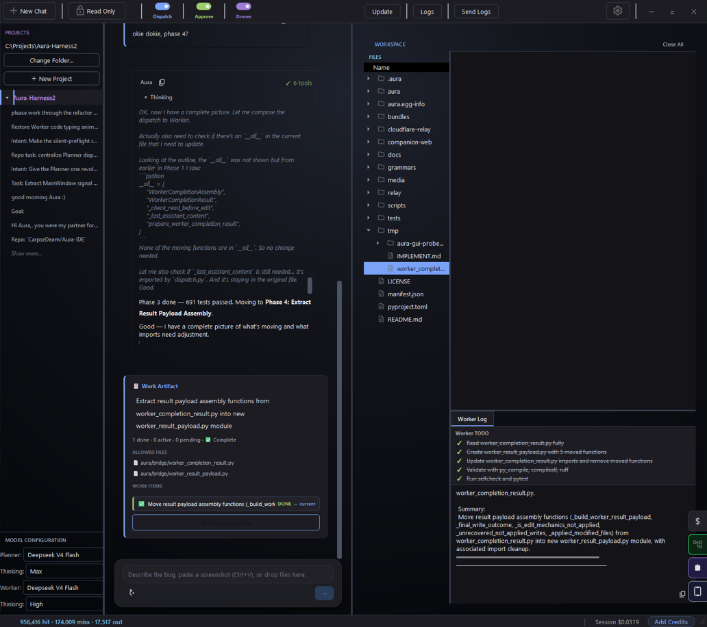
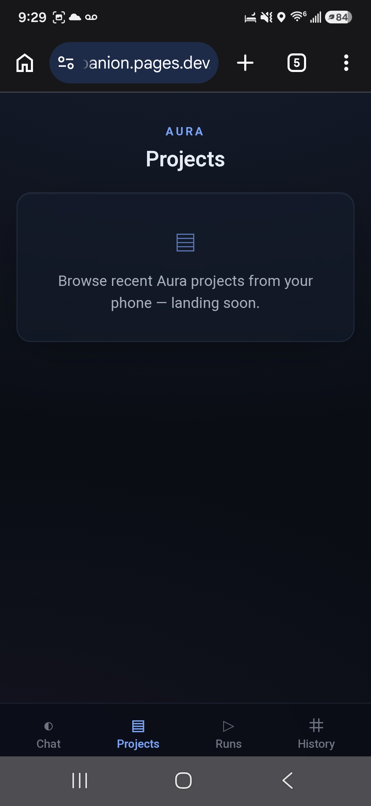
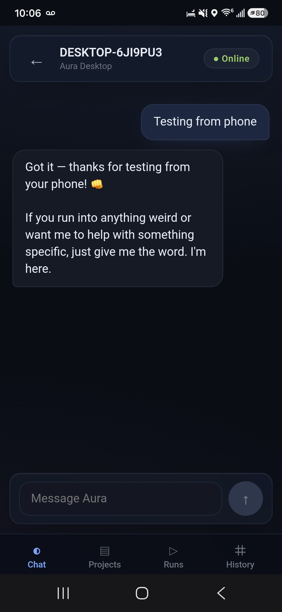

Plans before writing
See the strategy, file scope, and checks before execution begins.
Open-source desktop coding harness
Bring any model. Aura makes it plan, prove, and validate its work.
Aura turns AI coding into a visible loop: approve the plan, review the diff, run validation, keep the receipt.
Local-first · Bring your own keys · MIT licensed
A harness, not a black box
See the strategy, file scope, and checks before execution begins.
Inspect every proposed change and keep control of what reaches disk.
Run the right checks and retain a durable record of completed work.
The visible loop
Aura separates planning from execution so every job has a clear shape, every write can be reviewed, and every finish can be proven.
Describe the change you want in plain language.
Planner inspects the workspace and prepares a focused spec.
You approve the plan before bounded work begins.
Proposed edits appear as readable diffs you control.
Aura runs checks suited to the files and project.
Completion leaves a receipt of work, checks, and cost.
Product proof
Real Aura panels show the plan, active file scope, live tool activity, proposed changes, validation, and the final record.


WorkArtifact progression
The allowed files and work item remain attached from active execution through completion.




Model access
BYOK is first-class and forever. Aura Credits are optional convenience when you want to start without API key setup.
Connect directly to DeepSeek, OpenAI, Anthropic, Gemini, or OpenRouter. Your key, your billing, your data.
Buy credits and start without managing provider accounts or API keys. Credits never replace the BYOK path.
No subscription required.
Use BYOK for one role and Aura Credits for another—or choose two different providers. The harness stays consistent.
Aura Companion
Companion is a remote control for the desktop harness, not a separate IDE. Browse projects, message the Planner, approve dispatch, watch execution, and review receipts while your desktop remains responsible for the real workspace.


Drones
Define a useful job once, then run it again without giving up the policies, bounds, or evidence that make the main Aura loop trustworthy.
Turn repeatable project work into a job you can call up again.
Start it on demand or on a schedule, with the write policy you choose.
Each bounded lap finishes with a receipt you can review later.
Open-source support
Aura is built in public and released under the MIT license. Support helps cover infrastructure, packaging, and focused development time.